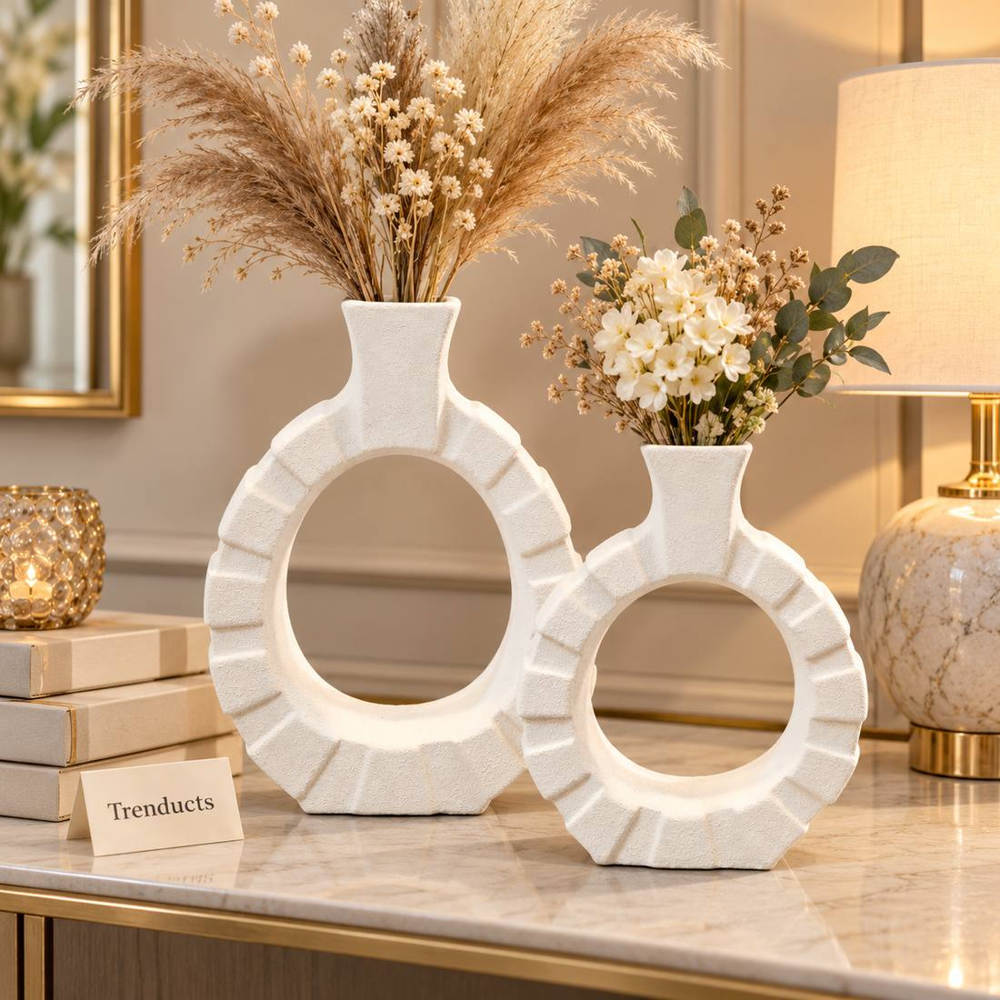
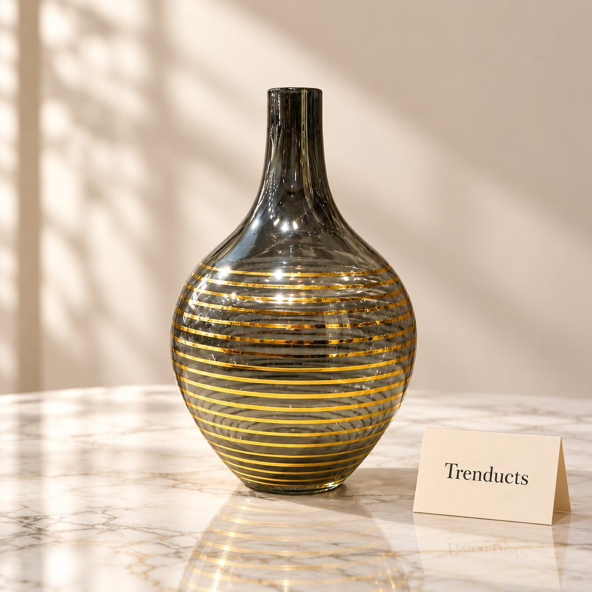
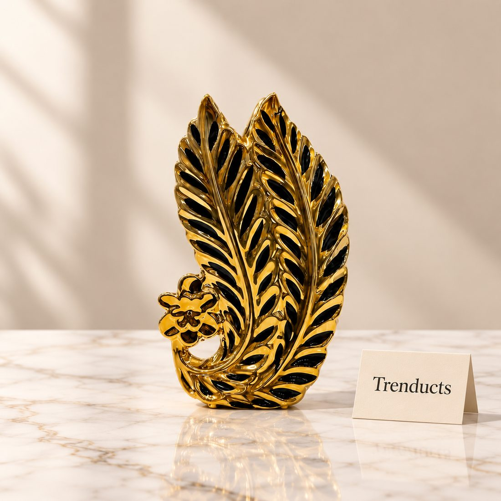

Flowers have a special place in Pakistani culture. Roses and motia garlands at weddings, gajray on Eid, the bunch of gladioli bought from a roadside stall on the way to visit relatives. Yet in many homes flowers appear only on special occasions. A well-chosen vase brings that feeling into everyday life, and with a little care fresh flowers can last a week or more.
Choose the vase for the space
Where the vase will sit should decide its size and shape:

- Entrance or console table: a tall vase with long stems makes a strong first impression
- Dining table: a low vase, so guests can see each other across the table
- Side table or shelf: a small bud vase with one or two stems
- Corner of a drawing room: a large floor vase with dried grass or branches
A good rule is that flowers should be around one and a half times the height of the vase. Narrow-necked vases hold stems upright, while wide bowls need more flowers to look full.
Materials and finishes
Glass shows off stems and water, which suits fresh flowers. Ceramic hides the stems and comes in many colours and textures, from plain white to black and gold. Metal and gold-rim vases look elegant in formal drawing rooms. If your room already has busy patterns on cushions and curtains, a plain vase works better. In a simple room, a textured or patterned vase can be the focal point.
Making fresh flowers last longer
Flowers from local markets are often already a day or two old, so they need help:
- Cut stems at an angle with a sharp knife before putting them in water
- Remove all leaves below the water line, as they rot quickly
- Use clean water and change it every one or two days
- Keep the vase away from direct sun, fans and the kitchen
- Recut stems a little each time you change the water
A pinch of sugar can feed the flowers, but it also feeds bacteria, so clean water changed often is more important.
Local flowers that work well
Roses are available almost all year and last well with care. Gladioli bring height and colour. Tuberoses, called rajnigandha, fill a room with scent in the evening. Marigolds are cheerful and long-lasting. In winter, many cities have a good supply of seasonal flowers at reasonable prices.

Dried flowers and stems
In Pakistani summers fresh flowers wilt quickly. Dried pampas grass, wheat stalks, cotton stems and dried branches last for months without water and need only an occasional dusting. They suit neutral ceramic or textured vases and work well in bedrooms and offices.
The empty vase
A beautiful vase does not always need flowers. A sculptural ceramic piece or a gold-detailed glass vase can stand alone on a shelf as decor. Group three vases of different heights but a similar colour for a balanced look. This is a good option for homes with small children, where water and flowers can tip over.
Keeping vases clean
Cloudy glass and a green ring inside vases come from bacteria. Wash vases with warm soapy water after each bunch of flowers. For narrow necks, add a little rice and vinegar, shake and rinse. Dry fully before storing.

Vases for occasions
During Eid, weddings and dawats, a pair of matching vases on either side of a table or sofa looks festive. For mehndi or milad evenings, fill low bowls with marigold heads floating in water.
Quick questions
- How often should I change vase water? Every one or two days for fresh flowers. Cloudy water means bacteria are growing and flowers will wilt sooner.
Finding the right piece
If you want to add a vase or two to your home, Trenducts has a wide range of decorative glass and ceramic vases, from simple white textured designs to statement pieces with gold details. You can also browse other home décor at https://www.trenducts.pk/ to match cushions, trays and candle holders.
A single stem in the right vase can change the feel of a room. Start small, keep the water fresh, and enjoy flowers every day, not just on special occasions.